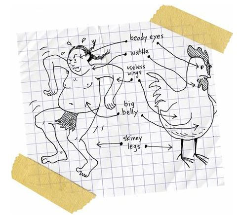
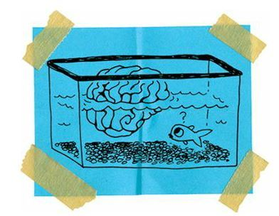
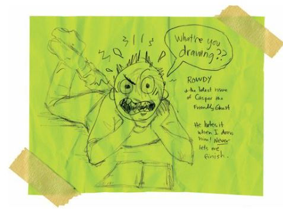

Revenge Is My Middle Name
After Oscar died, I was so depressed that I thought about crawling into a hole and disappearing forever.
But Rowdy talked me out of it.
“It’s not like anybody’s going to notice if you go away,” he said. “So you might as well gut it out.”
Isn’t that tough love?
Rowdy is the toughest kid on the rez. He is long and lean and strong like a snake.
His heart is as strong and mean as a snake, too.
But he is my best human friend and he cares about me, so he would always tell me the truth.
And he is right. Nobody would miss me if I was gone.
Well, Rowdy would miss me, but he’d never admit that he’d miss me. He is way too tough for that kind of emotion.
But aside from Rowdy, and my parents and sister and grandmother, nobody would miss me.
I am a zero on the rez. And if you subtract zero from zero, you still have zero. So what’s the point of subtracting when the answer is always the same?
So I gut it out.
I have to, I guess, especially since Rowdy is having one of the worst summers of his life.
His father is drinking hard and throwing hard punches, so Rowdy and his mother are always walking around with bruised and bloody faces.
“It’s war paint,” Rowdy always says. “It just makes me look tougher.”
And I suppose it does make him look tougher, because Rowdy never tries to hide his wounds. He walks around the rez with a black eye and split lip.
This morning, he limped into our house, slumped in a chair, threw his sprained knee up on the table, and smirked.
He had a bandage over his left ear.
“What happened to your head?” I asked.
“Dad said I wasn’t listening,” Rowdy said. “So he got all drunk and tried to make my ear a little bigger.”
My mother and father are drunks, too, but they aren’t mean like that. Not at all. They sometimes ignore me. Sometimes they yell at me. But they never, ever, never, ever hit me. I’ve never even been spanked. Really. I think my mother sometimes wants to haul off and give me a slap, but my father won’t let it happen.
He doesn’t believe in physical punishment; he believes in staring so cold at me that I turn into a ice-covered ice cube with an icy filling.
My house is a safe place, so Rowdy spends most of his time with us. It’s like he’s a family member, an extra brother and son.
“You want to head down to the powwow?” Rowdy asked.
“Nah,” I said.
The Spokane Tribe holds their annual powwow celebration over the Labor Day weekend. This was the 127th annual one, and there would be singing, war dancing, gambling, storytelling, laughter, fry bread, hamburgers, hot dogs, arts and crafts, and plenty of alcoholic brawling.
I wanted no part of it.
Oh, the dancing and singing are great. Beautiful, in fact, but I’m afraid of all the Indians who aren’t dancers and singers. Those rhythmless, talentless, tuneless Indians are most likely going to get drunk and beat the shit out of any available losers.
And I am always the most available loser.
“Come on,” Rowdy said. “I’ll protect you.”
He knew that I was afraid of getting beat up. And he also knew that he’d probably have to fight for me.
Rowdy has protected me since we were born.
Both of us were pushed into the world on November 5, 1992, at Sacred Heart Hospital in Spokane. I’m two hours older than Rowdy. I was born all broken and twisted, and he was born mad.
He was always crying and screaming and kicking and punching.
He bit his mother’s breast when she tried to nurse him. He kept biting her, so she gave up and fed him formula.
He really hasn’t changed much since then.
Well, at fourteen years old, it’s not like he runs around biting women’s breasts, but he does punch and kick and spit.
He got into his first fistfight in kindergarten. He took on three first graders during a snowball fight because one of them had thrown a piece of ice. Rowdy punched them out pretty quickly.
And then he punched the teacher who came to stop the fight.
He didn’t hurt the teacher, not at all, but man, let me tell you, that teacher was angry.
“What’s wrong with you?” he yelled.
“Everything!” Rowdy yelled back.
Rowdy fought everybody.
He fought boys and girls.
Men and women.
He fought stray dogs.
Hell, he fought the weather.
He’d throw wild punches at rain.
Honestly.
“Come on, you wuss,” Rowdy said. “Let’s go to powwow. You can’t hide in your house forever. You’ll turn into some kind of troll or something.”
“What if somebody picks on me?” I asked.
“Then I’ll pick on them.”
“What if somebody picks my nose?” I asked.
“Then I’ll pick your nose, too,” Rowdy said.
“You’re my hero,” I said.
“Come to the powwow,” Rowdy said. “Please.”
It’s a big deal when Rowdy is polite.
“Okay, okay,” I said.
So Rowdy and I walked the three miles to the powwow grounds. It was dark, maybe eight o’clock or so, and the drummers and singers were loud and wonderful.
I was excited. But I was getting hypothermic, too.
The Spokane Powwow is wicked hot during the day and freezing cold at night.
“I should have worn my coat,” I said.
“Toughen up,” Rowdy said.
“Let’s go watch the chicken dancers,” I said.
I think the chicken dancers are cool because, well, they dance like chickens. And you already know how much I love chicken.

“This crap is boring,” Rowdy said.
“We’ll just watch for a little while,” I said. “And then we’ll go gamble or something.”
“Okay,” Rowdy said. He is the only person who listens to me.
We weaved our way through the parked cars, vans, SUVs, RVs, plastic tents, and deer-hide tepees.
“Hey, let’s go buy some bootleg whiskey,” Rowdy said. “I got five bucks.”
“Don’t get drunk,” I said. “You’ll just get ugly.”
“I’m already ugly,” Rowdy said.
He laughed, tripped over a tent pole, and stumbled into a minivan. He bumped his face against a window and jammed his shoulder against the rearview mirror.
It was pretty funny, so I laughed.
That was a mistake.
Rowdy got mad.
He shoved me to the ground and almost kicked me. He swung his leg at me, but pulled it back at the last second. I could tell he wanted to hurt me for laughing. But I am his friend, his best friend, his only friend. He couldn’t hurt me. So he grabbed a garbage sack filled with empty beer bottles and hucked it at the minivan.
Glass broke everywhere.
Then Rowdy grabbed a shovel that somebody had been using to dig barbecue holes and went after that van. Just beat the crap out of it.
Smash! Boom! Bam!
He dented the doors and smashed the windows and knocked off the mirrors.
I was scared of Rowdy and I was scared of getting thrown in jail for vandalism, so I ran.
That was a mistake.
I ran right into the Andruss brothers’ camp. The Andrusses—John, Jim, and Joe—are the cruelest triplets in the history of the world.
“Hey, look,” one of them said. “It’s Hydro Head.”
Yep, those bastards were making fun of my brain disorder. Charming, huh?
“Nah, he ain’t Hydro,” said another one of the brothers. “He’s Hydrogen.”
I don’t know which one said that. I couldn’t tell them apart. I decided to run again, but one of them grabbed me, and shoved me toward another brother. All three of them shoved me to and fro. They were playing catch with me.
“Hydromatic.”
“Hydrocarbon.”
“Hydrocrack.”
“Hydrodynamic.”
“Hydroelectric.”
“Hydro-and-Low.”
“Hydro-and-Seek.”
I fell down. One of the brothers picked me up, dusted me off, and then kneed me in the balls.
I fell down again, holding my tender crotch, and tried not to scream.
The Andruss brothers laughed and walked away.
Oh, by the way, did I mention that the Andruss triplets are thirty years old?
What kind of men beat up a fourteen-year-old boy?
Major-league assholes.
I was lying on the ground, holding my nuts as tenderly as a squirrel holds his nuts, when Rowdy walked up.
“Who did this to you?” he asked.
“The Andruss brothers,” I said.
“Did they hit you in the head?” Rowdy asked. He knows that my brain is fragile. If those Andruss brothers had punched a hole in the aquarium of my skull, I might have flooded out the entire powwow.
“My brain is fine,” I said. “But my balls are dying.”

“I’m going to kill those bastards,” Rowdy said.
Of course, Rowdy didn’t kill them, but we hid near the Andruss brothers’ camp until three in the morning. They staggered back and passed out in their tent. Then Rowdy snuck in, shaved off their eyebrows, and cut off their braids.
That’s about the worst thing you can do to an Indian guy. It had taken them years to grow their hair. And Rowdy cut that away in five seconds.
I loved Rowdy for doing that. I felt guilty for loving him for that. But revenge also feels pretty good.
The Andruss brothers never did figure out who cut their eyebrows and hair. Rowdy started a rumor that it was a bunch of Makah Indians from the coast who did it.
“You can’t trust them whale hunters,” Rowdy said. “They’ll do anything.”
But before you think Rowdy is only good for revenge, and kicking the shit out of minivans, raindrops, and people, let me tell you something sweet about him: he loves comic books.
But not the cool superhero ones like Daredevil or X-Men. No, he reads the goofy old ones, like Richie Rich and Archie and Casper the Friendly Ghost. Kid stuff. He keeps them hidden in a hole in the wall of his bedroom closet. Almost every day, I’ll head over to his house and we’ll read those comics together.
Rowdy isn’t a fast reader, but he’s persistent. And he’ll just laugh and laugh at the dumb jokes, no matter how many times he’s read the same comic.

I like the sound of Rowdy’s laughter. I don’t hear it very often, but it’s always sort of this avalanche of ha-ha and ho-ho and hee-hee.
I like to make him laugh. He loves my cartoons.
He’s a big, goofy dreamer, too, just like me. He likes to pretend he lives inside the comic books. I guess a fake life inside a cartoon is a lot better than his real life.
So I draw cartoons to make him happy, to give him other worlds to live inside.
I draw his dreams.
And he only talks about his dreams with me. And I only talk about my dreams with him.
I tell him about my fears.
I think Rowdy might be the most important person in my life. Maybe more important than my family. Can your best friend be more important than your family?
I think so.
I mean, after all, I spend a lot more time with Rowdy than I do with anyone else.
Let’s do the math.
I figure Rowdy and I have spent an average of eight hours a day together for the last fourteen years.
That’s eight hours times 365 days times fourteen years.
So that means Rowdy and I have spent 40,880 hours in each other’s company.
Nobody else comes anywhere close to that.
Trust me.
Rowdy and I are inseparable.